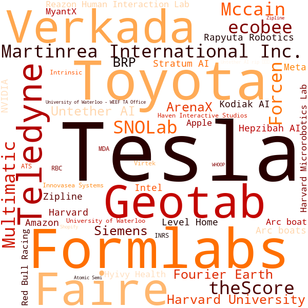
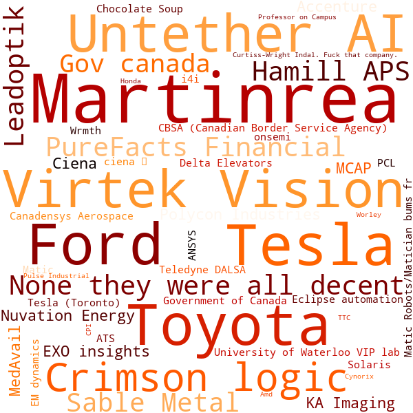

Oooweee. Just look at that trendline. Flat as anything. And that R^2? Not much better. 0.000166. My good friend google.com told me this is a good way to prove two variables are not correlated.
Overall University Average vs Average Co-op Wage
Co-Op: Hourly Wage
People like to pay you more when you know how to do things.
It's an in-demand ability, knowing how to do things.
It's an in-demand ability, knowing how to do things.
Co-Op: Hourly Wage by Gender
The gendered wage gap is clearly visible in our coop pay. This is a more prominent discrepancy than what was observed in the 2022 class profile.
Primary Job Function during your Final Co-op Term
Most people chose to either specialize into Hardware or Software roles.
Not super surprising, those are pretty big umbrellas now that I think about it. These two fields are fairly evenly split, with only a single point discrepancy between them.
Not super surprising, those are pretty big umbrellas now that I think about it. These two fields are fairly evenly split, with only a single point discrepancy between them.
Final Co-op Job Function vs. Hourly Wage
Software Engineering roles had the highest median pay, if you don't count whatever the hell is going on with Product Management over there.
Co-op Term Locations
After the third Coop term, roles in the GTA actually stay pretty steady while other categories shrank to give way to more Bay Area jobs.
They doubled between the last 2 terms? Kinda crazy.
They doubled between the last 2 terms? Kinda crazy.
Co-op Location vs. Hourly Wage
Ok, I think I'm getting why people want to make California money now.
Have you ever had a 'hell' co-op term (a severely bad/toxic experience)?
Well that sucks. You should avoid doing that again.
What was your favorite company to work at?

Tesla won by quite a bit, with 9 votes towering over Formlabs and Verkata's 3 apiece. Tesla loves hiring Tron students, so it's no surprise they got a lot of backing.
What was your LEAST favorite company to work at?

Martinrea won with three (count em') THREE entire votes! Tesla tied for second, along with Toyota, Ford, Virtek and Untether. Each of these lovely runner-ups received 2 votes!